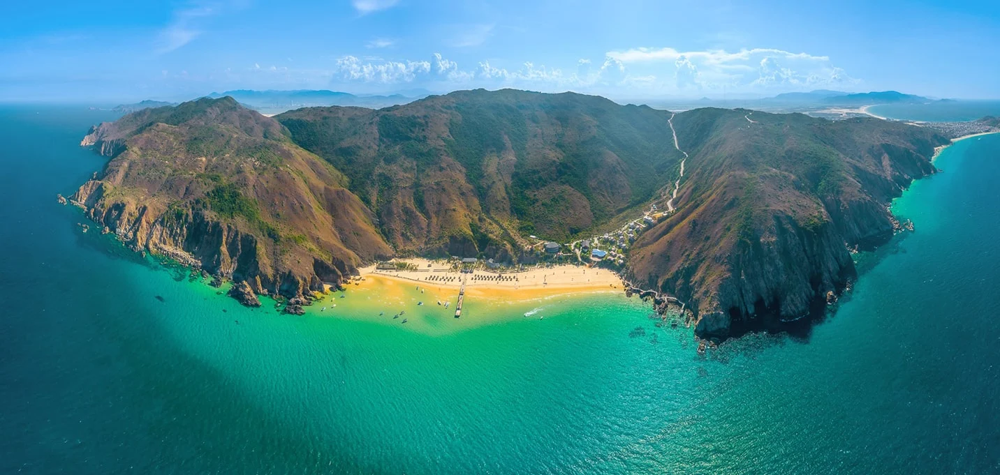
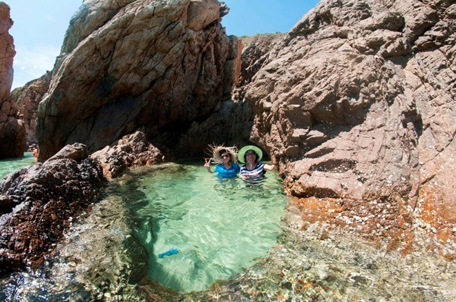
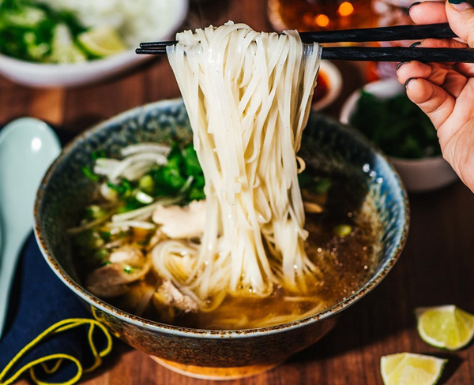
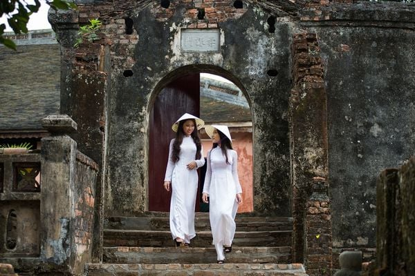
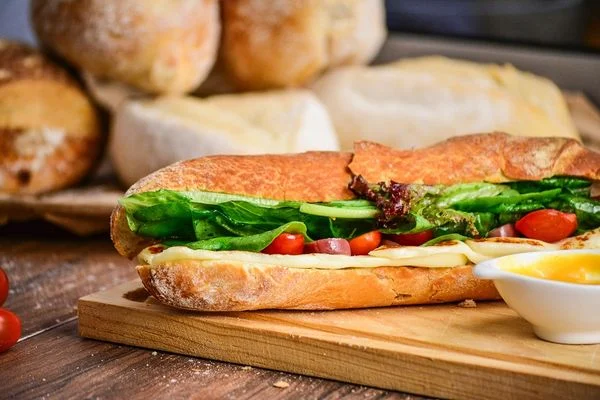

3.Bãi tắm Kỳ Co
-Kỳ Co nằm cách trung tâm thành phố Quy Nhơn hơn 20 km về phía đông nam.
Đây được coi là một địa điểm du lịch lý thú nhất tại Quy Nhơn với 2 mặt giáp núi và một mặt giáp biển.
Rất thích hợp cho các dân phượt bằng xe máy.
Bạn có thể di chuyển bằng ô tô nhưng đi bằng xe máy sẽ tiện hơn cho việc tham thú và khám phá nơi này.
Hình ảnh bãi tắm kì co từ trên cao

-Kỳ Co là địa điểm lý tưởng cho bạn nạp “vitamin sea".
Quy Nhơn có khí hậu ôn hòa thế nên bạn có thể đến đây vào bất cứ thời gian nào trong năm nhưng để thuận tiện nhất thì bạn nên đi vào thời gian khoảng từ tháng 2 đến tháng 8. Lúc này thời tiết mát mẻ, ít mưa hơn dễ dàng cho việc đi lại và thăm quan.Nằm cách trung tâm thành phố Quy Nhơn gần 25km,
Kỳ Co là một bãi biển rất đặc biệt. Đường bờ biển cong như lưỡi liềm với 3 mặt giáp núi và 1 mặt giáp biển.
Do đó, để di chuyển đến biển Kỳ Co du khách sẽ phải trải qua 2 chặng đường. Thứ nhất là từ điểm xuất phát của bạn di chuyển đến thành phố Quy Nhơn. Thứ hai là di chuyển từ bến xe, bến tàu, sân bay tới bãi Kỳ Co.
1.Hang đá khi thủy triều rút

2.Hồ bơi tự nhiên

3.Đi cano hoặc ghe từ Eo Gió ra Kỳ Co
Còn rất nhiều khung cảnh thiên nhiên và các bãi đá độc đáo.Bạn có thể lựa chọn và trải nghiệm các Tour du lịch qua các wedsite uy tín ngay dưới đây.
Văn hóa Việt Nam và những nét đẹp truyền thống
-
Phở - nét đẹp văn hóa ẩm thực Việt Nam
@nbsp Phở là một trong những món ăn tiêu biểu nhất của ẩm thực Việt Nam, được coi là "quốc hồn quốc túy" của đất nước. Phở có nguồn gốc từ miền Bắc Việt Nam, xuất hiện vào đầu thế kỷ 20. Món ăn này được làm từ bánh phở, nước dùng ninh từ xương bò hoặc gà, thịt bò hoặc gà thái mỏng, hành lá, chanh, ớt,...
Phở là một món ăn ngon, bổ dưỡng và có giá trị văn hóa sâu sắc. Món ăn này thể hiện tinh thần cộng đồng của người Việt Nam. Phở là món ăn quen thuộc của người Việt Nam, từ những bữa ăn gia đình đến những bữa tiệc sang trọng. Phở cũng là món ăn được yêu thích của du khách quốc tế.
Món phở được tìm thấy bất kì đâu ở Việt Nam, và cũng may mắn thay cho phần còn lại của thế giới, món ăn “kinh điển” này cũng được các nhà hàng Việt Nam đem hến hầu hết mọi nơi trên thế giới.

Tìm hiểu thêm về Phở tại đây nhé!
-
Áo dài - Vẻ đẹp tinh hoa của văn hóa Việt Nam

Một trong những trang phục dân tộc đẹp nhất thế giới chính là tà áo dài cổ truyền, thanh lịch của Việt Nam. Tà áo bó sát người, lướt trên những đường cong uyển chuyển của người con gái ngày nay có nguồn gốc từ trang phục quý tộc triều Nguyễn vào thế kỷ 18.
Áo dài là trang phục truyền thống của người Việt Nam, là niềm tự hào của dân tộc. Áo dài có lịch sử lâu đời, bắt nguồn từ những chiếc áo giao lĩnh của người phụ nữ Việt Nam từ thế kỷ thứ 2 trước Công nguyên. Trải qua thời gian, áo dài đã có nhiều thay đổi về kiểu dáng, chất liệu nhưng vẫn giữ được những nét đặc trưng, mang đậm bản sắc văn hóa Việt Nam.
Áo dài được may bằng chất liệu vải mềm, mịn, thường là lụa, gấm, nhung,... Áo có hai phần chính là thân trước và thân sau, nối liền với nhau bằng hai vạt áo. Thân áo được may ôm sát cơ thể, tạo nên vẻ đẹp duyên dáng, thanh lịch cho người mặc. Vạt áo dài có thể xẻ tà hoặc không xẻ, tùy theo sở thích của người mặc.
Tìm hiểu tinh hoa văn hóa dân tộc Việt Nam ngay !
-
Bánh mì - Hương vị của văn hóa Việt Nam

Sandwich quả thật là một món ăn ngon miệng, nhưng bánh mì Việt Nam thậm chí còn tuyệt vời hơn. Không đi đâu xa, đây là lời nhận xét của những người bạn ngoại quốc đối với món ăn “quen mặt” này. Được người Pháp giới thiệu, người Việt Nam đã hoàn toàn biến bánh mì thành món ăn của riêng mình.
Tùy vùng miền mà bánh mì có các loại nhân khác nhau, phổ biến như thịt heo nướng, thị gà, thịt bò, kèm với các loại rau quả như húng quế, hành ngò, hành tây cùng lớp pate béo bùi, thơm ngon… Bánh mì được ví như một loại sandwich độc nhất vô nhị. Món ăn này cũng dễ dàng được chế biến tại gia nếu bạn đủ nhạy để có một công thức tốt và tập trung đầy đủ các nguyên liệu cần thiết.
-
Rượu gạo Việt Nam - Nét đẹp văn hóa truyền thống
Rượu gạo Việt Nam được chương cất từ nguồn lương thực chủ yếu của đất nước – gạo, thường được chế biến trong các xưởng gia đình, bán với giá rẻ và chưa được đăng ký trong các chai nhựa tái sử dụng.
Loại rượu gạo, rượu truyền thống được sản xuất bởi các dân tộc thiểu số miền núi Việt Nam, sử dụng gạo nếp đen hoặc nâu, thảo mộc, vỏ cây và các hương liệu tự nhiên khác, lên men trong một bình gốm lớn ít nhất vài tuần. Rượu gạo thường có sẵn trong các siêu thị, nhâm nhi một ly rượu gạo cùng đồ nhắm địa phương có thể là một trải nghiệm độc đáo chỉ có ở Việt Nam. Và theo khái niệm văn hóa cộng đồng, những buổi tụ tập ngồi bên nhau cùng thưởng thức rượu gạo giống như nét đẹp tập quán của người dân.
Nét đẹp rượu gạo Việt Nam!
-
Cà phê Việt Nam - Đậm đà hương vị, tinh tế văn hóa
Việt Nam đạt được vị thế là đất nước xuất khẩu cà phê lớn thứ hai thế giới khá nhanh trong thế kỷ qua. Khách nước ngoài vẫn truyền tai nhau tìm mua cà phê xay hoặc đến những tiệm cà phê nổi tiếng tại các địa phương, thành phố lớn để thưởng thức hương vị cà phê Việt.
Cách tốt nhất để nhâm nhi cà phê theo phong cách người Việt Nam thường là một ly cà phê đen hoặc cà phê sữa đá. Thêm cà phê xay vào phin, chế nước sôi để cà phể nhỏ giọt vào cốc bên dưới, thêm sữa đặc tùy khẩu vị và vài viên đá làm mát là bất kỳ ai cũng có thể thưởng thức món đồ uống tuyệt hảo này rồi.
Kết luận:
Văn hóa Việt Nam được hình thành và phát triển qua hàng nghìn năm lịch sử, chịu ảnh hưởng của nhiều yếu tố khác nhau, từ tự nhiên, lịch sử, kinh tế, xã hội đến các nền văn hóa khác. Văn hóa Việt Nam có những giá trị tinh thần cao đẹp, thể hiện qua những đức tính tốt đẹp của con người Việt Nam, như: lòng yêu nước, tinh thần đoàn kết, ý chí kiên cường, sự cần cù, sáng tạo,...
Văn hóa Việt Nam là một tài sản quý giá của dân tộc, cần được gìn giữ và phát huy. Mỗi người dân Việt Nam cần có ý thức gìn giữ, phát huy những giá trị văn hóa truyền thống của dân tộc, góp phần xây dựng một nền văn hóa Việt Nam tiên tiến, đậm đà bản sắc dân tộc.